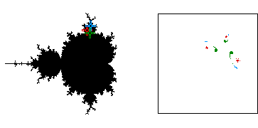

| On the left we see three points selected from a 3-cycle component of the Mandelbrot set; on the right, the corresponding sequences. |
| Note all three sequences of points - red, green, and blue - converge to (different) 3-cycles. |
| This illustrates that sequences generated by points c in an n-cycle component converge to nearby n-cycles. |
|  |
Return to stable cycles.